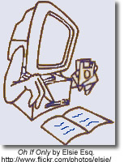
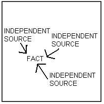

Evaluating Information
...the presence of inaccurate and biased information on the Internet is not our primary problem.
The information and points of view have not really changed, it is the tools that have changed.
David Warlick in Evaluating Internet-Based Information: A Goals-Based Approach

Evaluating Information
- Use specific criteria to determine the legitimacy of sources
- Evaluate resources based on relevance and reading level
- Determine different points of view presented in two pieces of information on the same topic
- Distinguish between bias, opinion and fact
In the article Critical Evaluation in the Collaborative Era, Kathy Schrock asks How do we teach critical evaluation of information when we have no way to determine authority? The focus in this article is on the issues and difficulties that arise in determining the 'research worthiness' of information in a wiki world.
Articles and Checklists
Better Read That Again: Web Hoaxes and Misinformation
This article differentiates and discusses differenent kinds of misinformation: counterfeit sites, parodies and spoofs, ficticious, questionable, malicious, product sites and subject specific misinformation sites. It also offers a number of sites that track internet misinformation including Snopes.
BBC interview with Tara Brabazon - "Google is white bread for the mind" - article in Times Online. - both of these may be time sensitive and therefore at some point the links may be broken.
Google is “white bread for the mind”, and the internet is producing a generation of students who survive on a diet of unreliable information
Teacher Helpers: Critical Evaluation Information - a collection of articles and evaluation checklists available from Kathy Schrock
Popular MicroModules on Evaluation from the 21st Century Information Fluency Project:
|
Hints About Print
This is an interactive tool that takes students (grade 3 - 5) through a processing of determining if a non-fction book is the best resource for their research. Once students have viewed the online demo they can print-out a fillable PDF and evaluate their own non-fiction book.
Quality Information Checklist - uses imaginary examples, quizzes and puzzles to allow young people (grades 3 - 7) explore for themselves the concepts around information quality. Many of the examples are health related, but the concepts can be used with any subjects that require information skills.
Fact or Folly: Evaluating Online Information - from Media Awareness Network
Evaluating Web Pages: Techniques to Apply & Questions to Ask - uses critical thinking skills, a series of specific questions, and techniques to provide a strategy for determining if a website can be trusted.
Online Evaluation Tools
Digital Index Card - a web-based tool for collecting and evaluating Net information. It consists of six forms that ask questions of the researcher, all designed to collect content and to help the researcher make decisions about the appropriateness of the information. As student input pertinent information about the source they asked questions which relate back to their research goal e.g. What aspect(s) of the author's or publishing organization's background helps you accomplish your goal?
Evaluation Wizard from 21 Century Information Fluencey - as students enter their evaluation notes for author, publisher, objectivity, date, accurancy and evidence they are provided with prompts about what to look for within the web site they are evaluating.
A WebQuest about Evaluating Web Sites : from Joyce Valenza for grade 9 - 12 students (Note - last updated in 2001 - links may have to be updated)
Applying Reading Comprehension Strategies to the Evaluation Process
 Critical Evaluation: Scary Research Findings Prompt New Internet Reading Strategies
Julie Coiro presents five activities associated with the online reading tasks that research suggests are particularly challenging for students who read to learn on the Internet. Each activity is accompanied with pertinent questions and relevant web sites.
- evaluating relevancy - reading search results
- evaluating reliability- investigating the author
- evaluating reliability - investigating the validity of the web site
- detecting bias - separating fact from opinion
- detecting bias - developing a healthy skeptism
A Think Aloud to Model Online Reading demonstrates how to use reading comprehension strategies to read, question and ultimately evaluate the relevance and validity of a web page. From: 21 Century Literacies
Researching a Web Page - using Treaty 6 students respond to a number of questions which focus their reading on each part of the Web page. (From - Elgin Wyatt, NBCHS)
From Alan November
Our students must understand the architecture of the internet to be able to effectively evaluate the information they find.
How to Read a Web Address - The first step in learning the grammar of the Internet is to read URLs closely.
WayBack Machine - Want to see the history of web site? Take a trip through time with the Wayback Machine.
How to Find the Publisher of a Website using EasyWhoIs
Beyond the Checklist - using contextual analysis to evaluate web pages
 Student Web Page Evaluation - a blog post that describes a successful lesson in which the teacher asks the students to use the comparison method. This requires requires the researcher to compare different sources and different types of sources in order to select the most useful.
Diagram from U Arizona Information Literacy: Evaluating Web Resources

Contact Information
Donna DesRoches
Learning Resources Consultant
Living Sky School Division
509 Pioneer Avenue
North Battleford, SK
S9A 4A5
306-937-7904
_________________________